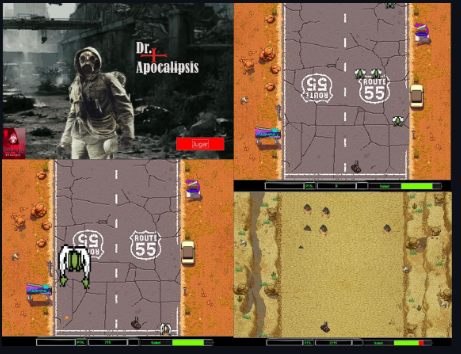

Dr. Apocalipsis
Juego desarrollado integramente en Java
Proyecto para la Universidad Nacional del Sur, el mismo fue realizado para comprender los patrones de diseño, en el mismo teníamos que realizar sprits, animaciones, sonidos, y un sin fin de cosas más, que nos permitieran comprender el funcionamiento de los patrones de diseño.